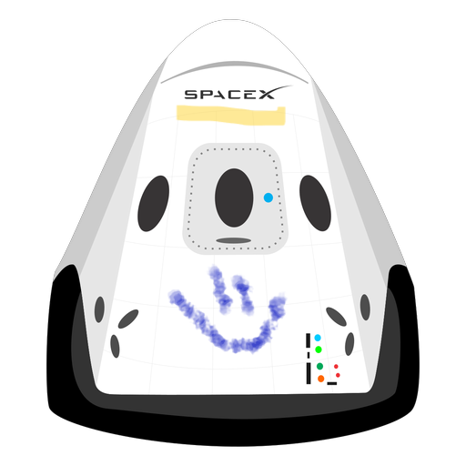

Hyperblog
Tu blog de
cabecera
Aquí inicia la historia de un gran proyecto
Y este es el párrafo de inicio donde vamos a explicar las cosas que se pueden hacer con ramas

Los blogs son la mejor forma de compartir información Y tus ideas. Mucho mas que ir a conferencia o salir en youtube. Excepto si eres un rockstar. Pero estadísticamente no lo eres... por ahora.
Suscribete y dale like